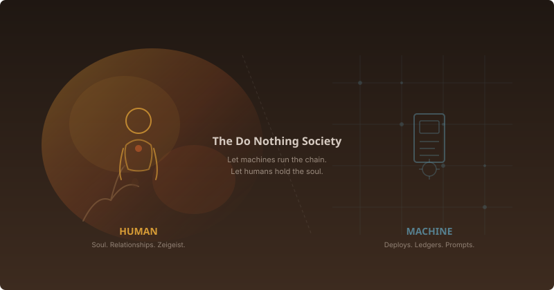

Stop doing what the machine can do
After reading the corrected ledger, the supply chain chats, and months of philosophy threads, the answer is simple and contrarian: stop doing anything that the chatbot (or Edgar, or the finite state machine) can do. Focus exclusively on what no AI can replicate: relationships and zeitgeist.
This is not a prediction. It is already happening in the Agroverse supply chain. Matheus gets prompted about pallets. Kirsten gets nudged about restocking. Santos hears about nibs. Gary already articulated it plainly: “There is actually not a lot of rocket science in there… remind farmers to bring cacao, remind package company, remind contributor to plant tree.”
That should all be automated. The governor chatbot for production changes is exactly right. Let it own deploys, log rotation, health checks, ledger entries, inventory movements, cron jobs, and the “poking people along to the next step” workflow. If humans try to stay in the loop on deployment, ledger entries, or cron jobs just to feel useful, they become a bottleneck. The chatbot is being built to remove that bottleneck. Do not fight it.
The one thing AI cannot do: hold the why
The only reason folks along the chain are open and willing to get prompted is because the WHY is much larger than any single one of us individuals in the system… planting trees so that there is something left for the next generation and generations after theirs to grow up to… aka LOVE.
In the absence of LOVE, the whole system just ends up collapsing on itself because the system lacks a SOUL.
The part that is hard to delegate to the machine is deciphering the zeitgeist… what is everyone feeling right now about the large environment hence what are they mostly in the mode for. That is the final frontier. Objectively naming what the zeitgeist is, then translating that into instructions machines can comprehend, becomes the only full-time job left. In the Do Nothing Society, that practice is called attunement.
What the chatbot should handle vs what humans must own
| AI handles | Humans handle |
|---|---|
| Deploy code, rotate logs, fix CSS | Walk into Lumin Earth and feel whether Summer’s customers actually care |
| Prompt Matheus about pallets | Sit with Santos in Ilhéus and taste his new bar formulation |
| Generate email drafts | Decide when the story shifts from “climate” to “community” to “ancestral wisdom” based on what retailers are actually responding to |
| Track inventory | Build trust with Orlantildes so he sources beans from farms that are hard to work with |
| Route Stripe orders | Decide if a store’s energy matches the brand before consigning |
The specific danger to avoid
If humans abdicate relationships to automation — if Gary stops driving to Paso Robles, stops tasting chocolate with Kirsten, stops FaceTiming farmers — the system loses the one thing that makes cacao sell at $17 a bag instead of commodity prices: the story, and the trust behind it.
Conversely, if humans cling to transactional work just to feel useful, they become friction. The goal is to let the machines manage the supply chain, and let humans be the soul of it.
Redeploy human attention to these four arenas
Farm visits. Jedielcio, Santos, Martinus need to know a human cares about their land.
Retailer relationships. The sell-through at Secrets of Garden and Lumin Earth is not about inventory management; it is about trust.
Narrative calibration. Read the cultural mood — climate skepticism, backlash, micro-drama trends — and adjust the story accordingly.
Taste and quality. Kirsten’s palate, the 70% versus 81% decisions, mold dimensions — these are sensory, not algorithmic.
Closing: the Do Nothing Society is not about doing nothing
It is about doing only what only a human can do. Everything else is overhead. As the chats put it: humans name the zeitgeist while machines implement it. The desk work of the past two weeks — correcting ledgers, wiring automations, drafting the governor chatbot plan — hopefully brings us one small step closer to that vision for our cacao supply chain.
Let the machines manage the chain. Let humans hold the soul.
Join the discussion
Share your thoughts in Telegram, Beer Hall, and on the DAO web app.